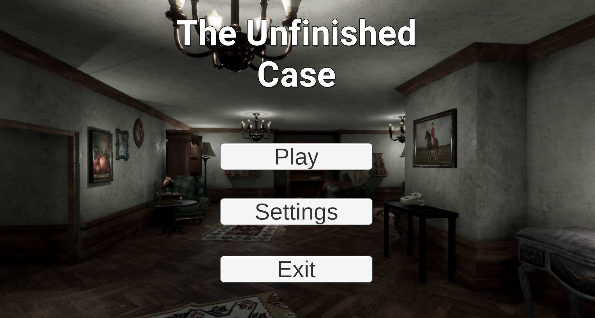
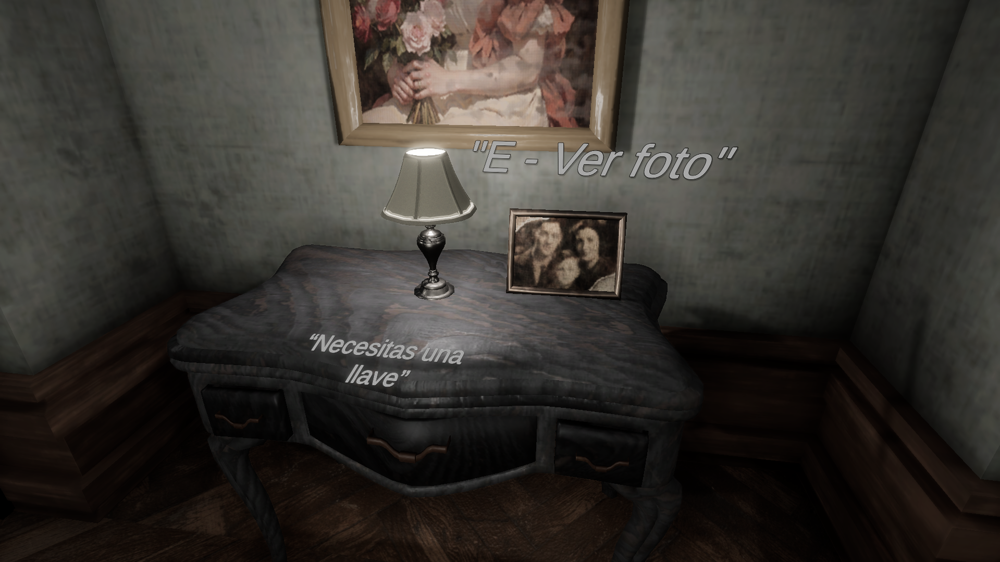
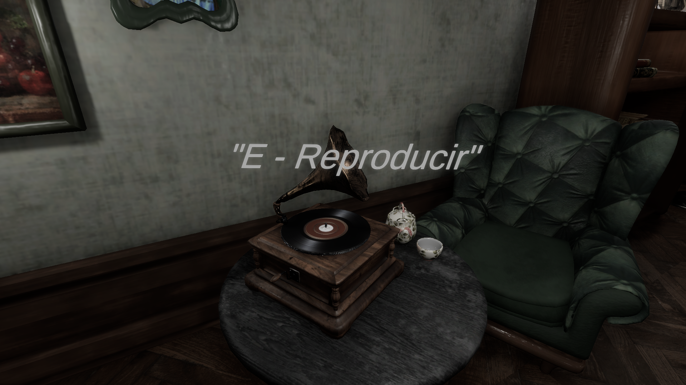
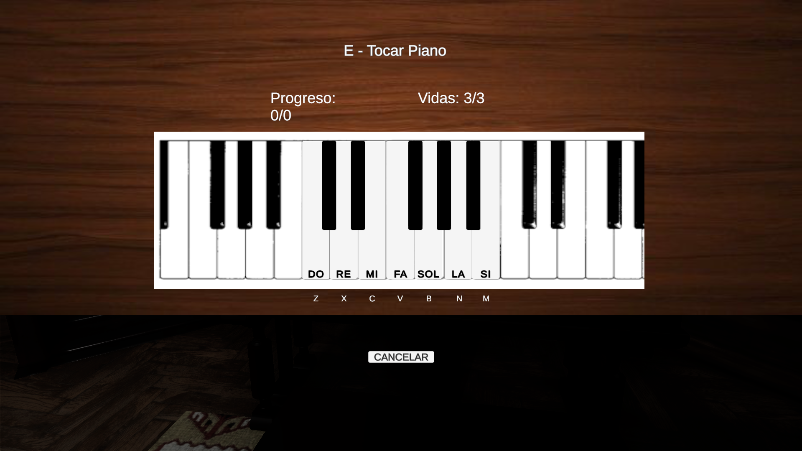
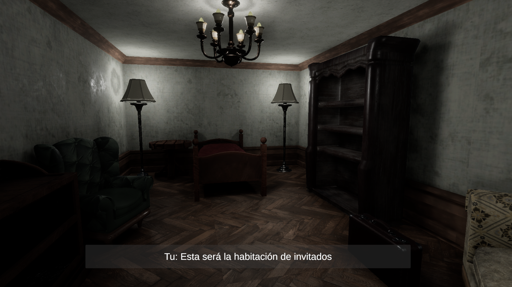

El Concepto
En este proyecto asumí el rol de desarrollador principal. El juego es un thriller de suspenso donde asumes el rol de un detective encargado de investigar el misterioso asesinato de un famoso pianista. Mi objetivo fue crear una atmósfera intrigante enfocada en la exploración y la resolución de puzzles.
Mi Rol y Retos
Me encargué de programar las mecánicas de investigación, la recolección de pistas y las físicas del jugador mediante C#. Uno de los mayores retos fue diseñar un sistema de inventario y deducción que resultara intuitivo para el jugador y que mantuviera el ritmo de tensión durante la partida.
Galería de Imágenes
Haz clic en las imágenes para ampliarlas:




Gameplay
(Sube un vídeo corto de tu gameplay a YouTube, dale a "Compartir > Insertar" y pega aquí el código del iframe)